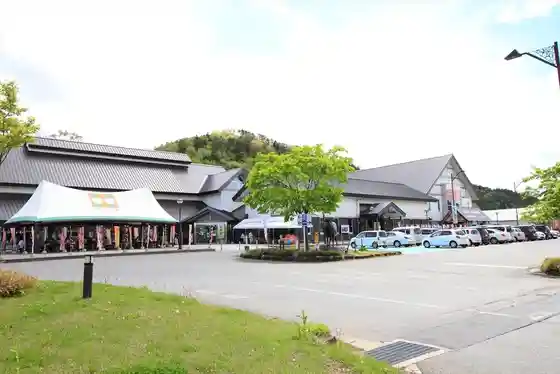
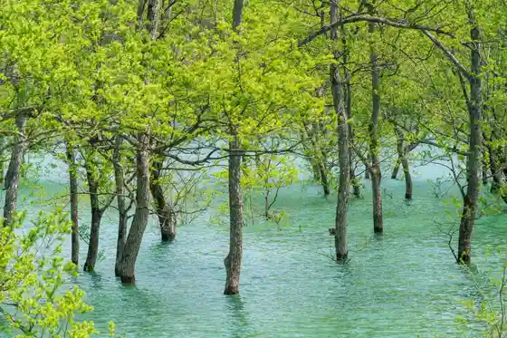
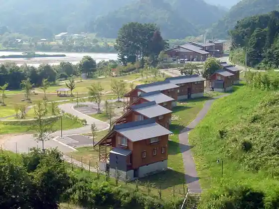

Shirakawa Mizumi no Suibotsu Hayashi
Iide, Yamagata · 0238-86-2411 · Official / source link
Roadside Station (Iide) Mezami no Sato Kanko Bussan Kan
Iide, Yamagata · 0238-86-3939 · Official / source link

Shirakawa Kogan Park
Iide, Yamagata · Official / source link

Koteji Village Ki Mizumi Sato Kan
Iide, Yamagata · 0238-77-2124 · Official / source link

Iidedonden Taira Yuri Sono
Iide, Yamagata · 0238-78-5587 · Official / source link
Shirakawa Damu Kohan Oto Campground
Iide, Yamagata · 0238-77-2124 · Official / source link
Iide Yamadai Nichi Sugi Tozanguchi
Iide, Yamagata · 0238-86-2411 · Official / source link
Shirakawa Dam
Iide, Yamagata · 0238-75-2131 · Official / source link
Shirakawa Onsen Shirakawa So
Iide, Yamagata · 0238-77-2124 · Official / source link
Den'en Sankyo Shuraku Lookout
Iide, Yamagata · 0238-86-2411 · Official / source link
Iide Kanu Club / YAMAGATA EXPERIENCE (Shirakawa Mizumi Kanu Tour)
Iide, Yamagata · 050-1722-1103 · Official / source link
Donden Taira Su no Park
Iide, Yamagata · 0238-86-2411 · Official / source link
Iide Soekawa Onsen Shirasagi So
Iide, Yamagata · 0238-74-2161 · Official / source link
Yuzuki
Iide, Yamagata · 0238-72-3477 · Official / source link
Jaku no I Shuzo
Iide, Yamagata · 0238-72-2020 · Official / source link
Genryu no Mori Center
Iide, Yamagata · 0238-77-2077 · Official / source link
Mezami no Sato Kanko Ichigo Sono
Iide, Yamagata · 0238-86-3939 · Official / source link
Panya
Iide, Yamagata · Official / source link
Shu Rin Yama Gen Kyo Tera (Soto Shu) / Oitama Sanju San Kannon Dai 2 Ban Koho Kannon
Iide, Yamagata · Official / source link
Dainichi Sugi Campground
Iide, Yamagata · 0238-72-2111 · Official / source link
Shirakawa Damu Kogan Koen Campground (Furiisaito)
Iide, Yamagata · 0238-77-2124 · Official / source link
Ippan Shadanhojin Iide Tourism Association
Iide, Yamagata · Official / source link
Iwahanaya Shokudo
Iide, Yamagata · 0238-75-2412 · Official / source link
Taiko In Zuiun Tera (Shingonshu) / Oitama Sanju San Kannon Dai 11 Ban Hagyu Kannon
Iide, Yamagata · Official / source link
Iide Yama no Ana Seki
Iide, Yamagata · 0238-72-2111 · Official / source link
Rairai Ken
Iide, Yamagata · 0238-72-2148 · Official / source link
Iwakura Shrine
Iide, Yamagata · 0238-72-211 · Official / source link
Lunch cafe Kano De Ru
Iide, Yamagata · 080-1653-3367 · Official / source link
Sakai Shokudo
Iide, Yamagata · 0238-72-3682 · Official / source link
Kogetsu
Iide, Yamagata · 0238-72-3923 · Official / source link
Uwaya Chi Iseki
Iide, Yamagata · 0238-72-2111 · Official / source link
Te no Ko Ski Area
Iide, Yamagata · 0238-72-3111 · Official / source link
Nagameyama Mizu Basho Gunsei Chi
Iide, Yamagata · 0238-86-2411 · Official / source link
Noka Resutoran'erube
Iide, Yamagata · 0238-86-2828 · Official / source link
Mikazuki Fudo Falls
Iide, Yamagata · 0238-87-0523 · Official / source link
Matsuo Yama Tenyo Tera (Shingonshu) / Oitama Sanju San Kannon Dai 4 Ban Naka Village Kannon
Iide, Yamagata · Official / source link
HOTEL SLOW VILLAGE
Iide, Yamagata · 0238-87-1730 · Official / source link
So Hakuzan Taka Den Tera (Soto Shu) / Oitama Sanju San Kannon Dai 3 Ban Kurosawa Kannon
Iide, Yamagata · Official / source link
Akaiwa Yakushido
Iide, Yamagata · 0238-72-2111 · Official / source link
Uoi
Iide, Yamagata · 0238-72-3232 · Official / source link
Matsuoka Monju Do
Iide, Yamagata · 0238-72-2111 · Official / source link
Ojika Shokudo
Iide, Yamagata · 0238-75-2028 · Official / source link
Shiki Sai Sakana Yutaka Aji
Iide, Yamagata · 0238-72-2109 · Official / source link
Niku no Sugai
Iide, Yamagata · 0238-74-2212 · Official / source link
Niku no Tanaka Ya
Iide, Yamagata · 0238-72-2054 · Official / source link
Magokoro Shokudo
Iide, Yamagata · 090-7790-2068 · Official / source link
Waka no I Ya
Iide, Yamagata · 0238-72-2020 · Official / source link
O Shokuji Tokoro Shotaro
Iide, Yamagata · 0238-77-2381 · Official / source link
Naka Village Gendo Dan
Iide, Yamagata · 0238-72-2111 · Official / source link
Iidedonden Taira Yuri Sono Cherry Blossoms
Iide, Yamagata · 0238-78-5587 · Official / source link
Hagyu Castle Park
Iide, Yamagata · 0238-72-2111 · Official / source link
Jun Na Kiharu
Iide, Yamagata · 080-7002-2109 · Official / source link